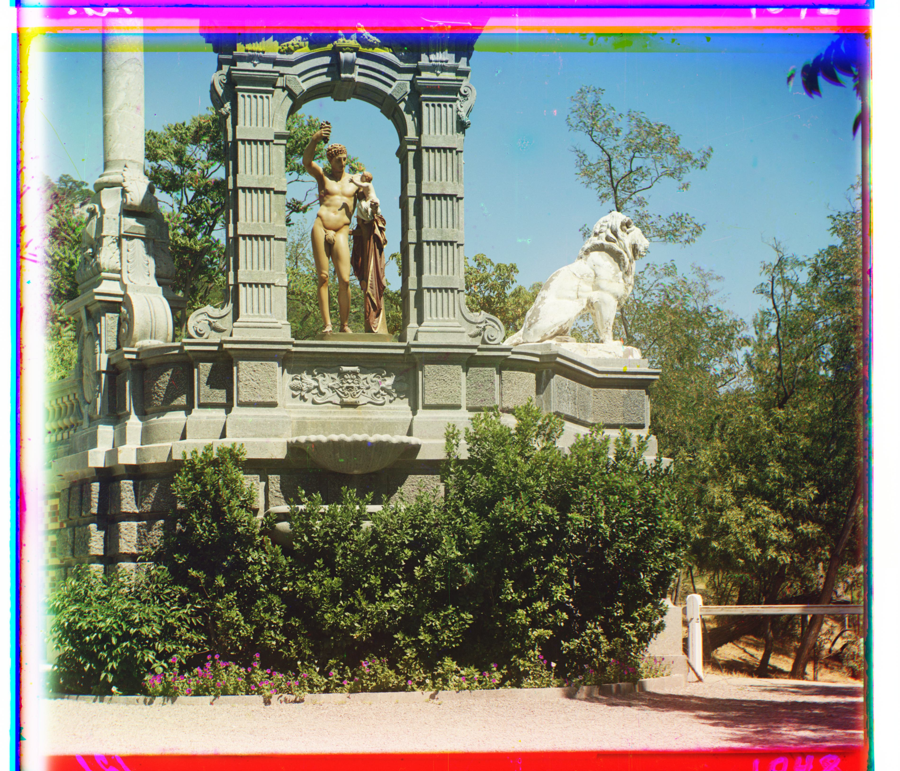

Outcomes
Raw
cathedral.jpg

church.tif

emir.tif

harvesters.tif

icon.tif
lady.tif
melons.tif
monastery.jpg

onion_church.tif

sculpture.tif

self_portrait.tif

three_generations.tif

tobolsk.jpg

train.tif

Aligned
Offset G: (5, 2), Offset R: (12, 3)

Offset G: (25, 4), Offset R: (58, -4)

Offset G: (49, 24), Offset R: (103, 55)

Offset G: (59, 17), Offset R: (123, 13)

Offset G: (41, 17), Offset R: (89, 23)
Offset G: (52, 8), Offset R: (113,11)

Offset G: (81, 10), Offset R: (178, 13)
Offset G: (-3, 2), Offset R: (3, 2)

Offset G: (51, 27), Offset R: (108, 36)

Offset G: (33, -11), Offset R: (140, -27)
Offset G: (78, 29), Offset R: (176, 37)

Offset G: (52, 13), Offset R: (111, 11)
Offset G: (3, 3), Offset R: (6, 3)

Offset G: (42, 6), Offset R: (87, 32)